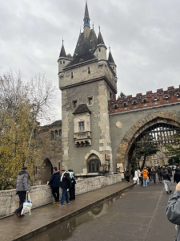
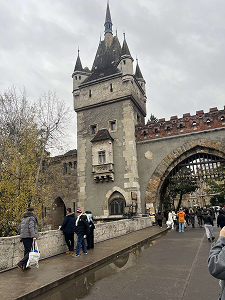

Vajdahunyad Castle
Vajdahunyad Castle is a unique architectural landmark originally built in 1896 for Hungary’s Millennium Exhibition. It’s not a single castle style — it’s a blend of Gothic, Renaissance, Baroque, and Romanesque architecture, designed to showcase Hungary’s history of building styles in one place.
Significance of the placement
Kolodko often chooses locations that create a playful connection between story and place. By setting Dracula beside a castle in the heart of the park, he ties together folklore, architecture, and humor. Its placement encourages people to explore, slow down, and discover artworks they would otherwise walk past.
Mihály Kolodko’s miniature statue placed here playfully reflects this rich historical layering, creating a dialogue between monumental national history and contemporary street art. Its discreet placement encourages close observation and reminds visitors that history can be discovered not only in grand forms, but also in small, unexpected details.